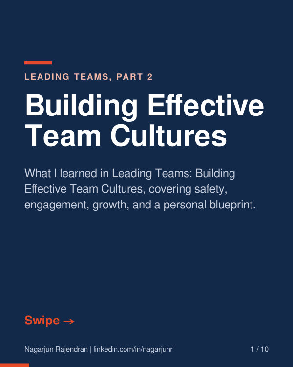
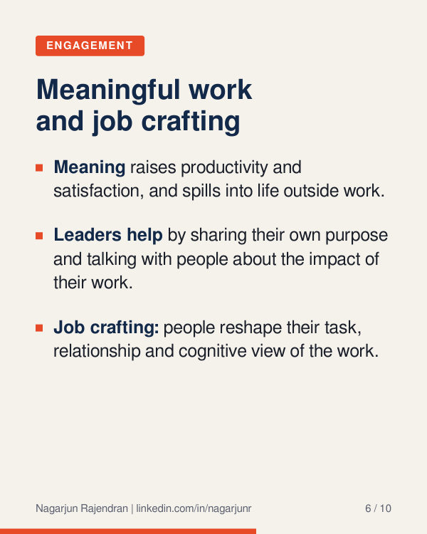
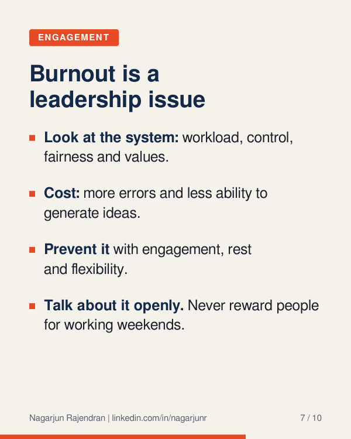
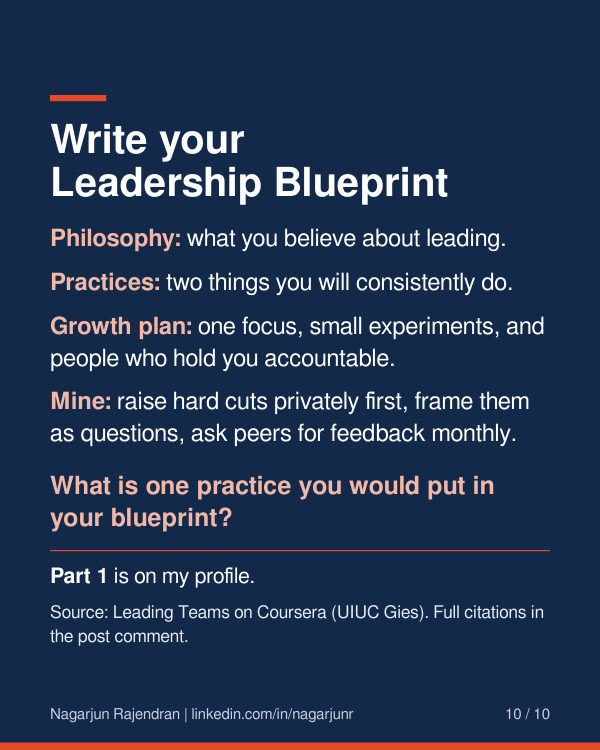

Leadership learning / 2 min read
Building effective team cultures.
This is part 2 of 2 of what I learned in the Leadership module at Gies College of Business, University of Illinois Urbana-Champaign. Part 1, Developing as a Leader, is also in these notes.
I used to think trust on a team came down to fixed character traits. A leadership module, Leading Teams: Building Effective Team Cultures, at UIUC changed that for me. Trust can grow when I adapt how I show up and give others the space to build it over time.
Here are my learnings from the second half of the course, Building Effective Team Cultures, in a 10-slide carousel. It starts with Amy Edmondson's hospital research, where the best performing teams reported more mistakes than the weaker ones, because they felt safe saying so. After that it covers Schein's view that culture is more than what you can see, how a leader builds psychological safety, autonomy versus control, meaningful work and job crafting, burnout, and moving from knowing to learning while making room for creativity.








The last slide is my Leadership Blueprint, including the practice I am committing to. What is one practice you would put in your own blueprint? I would love to hear.
The course is Leading Teams: Building Effective Team Cultures on Coursera. Thanks again to Elizabeth A. Luckman, Kari Keating and Denise Lewin Loyd for teaching it. The weekly logbooks and the final Blueprint turned the ideas into practices I can actually use.
Originally shared on LinkedIn.